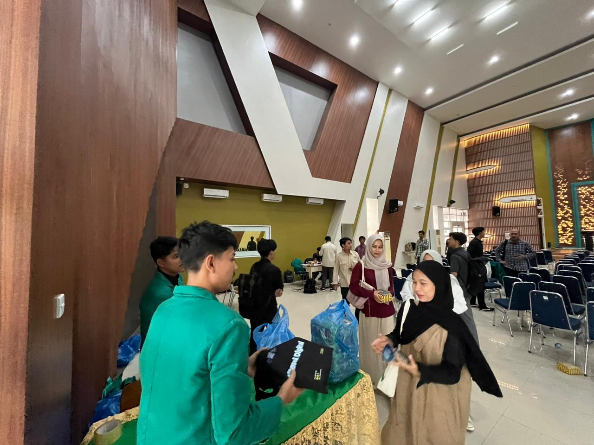
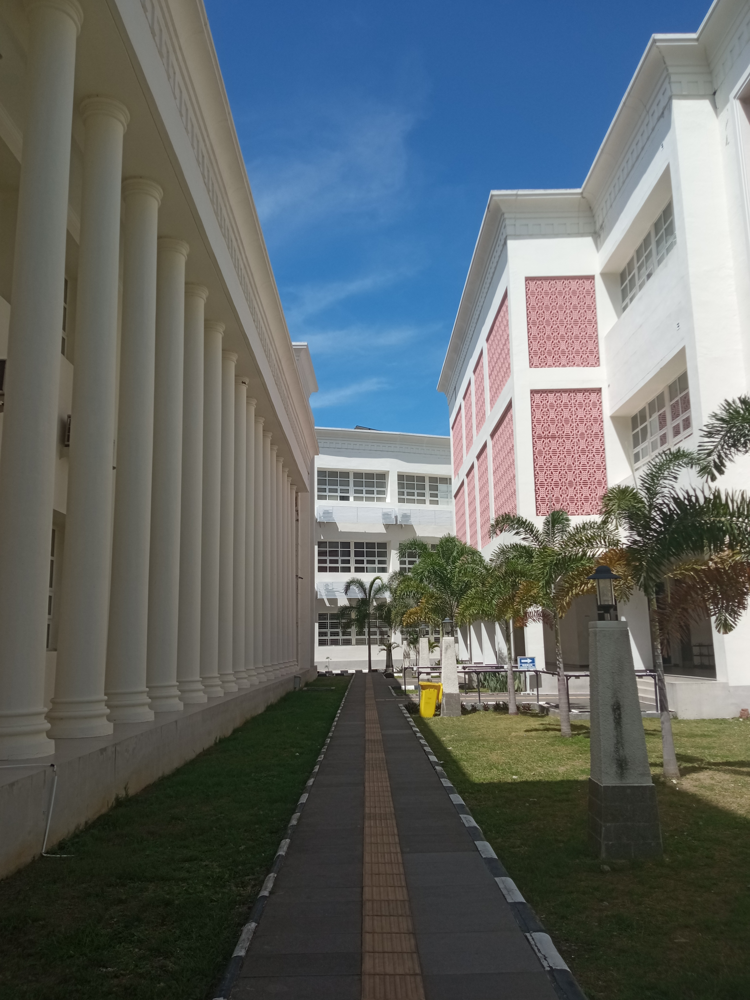
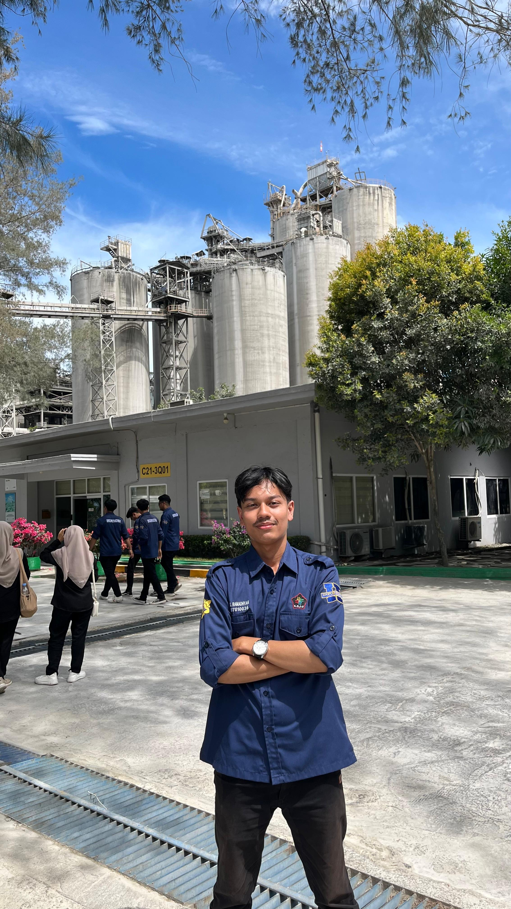
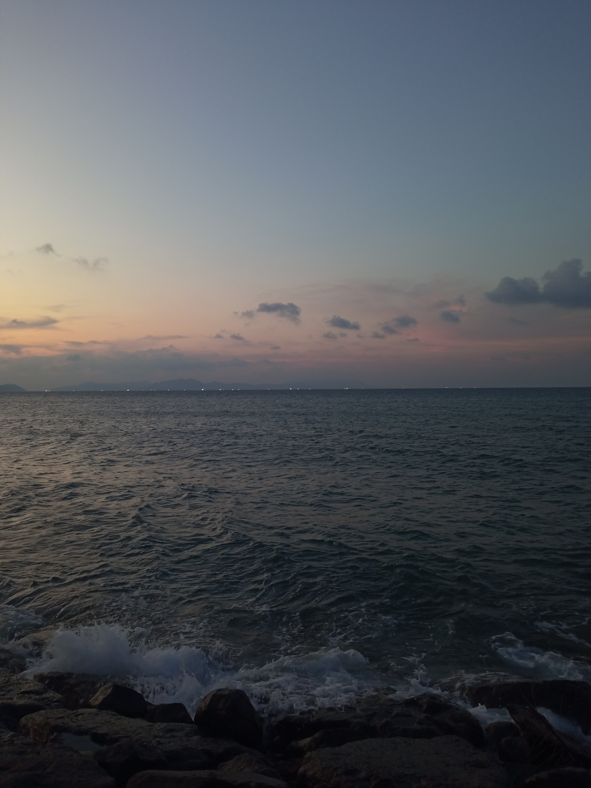

Muhammad Nazlul Ramadhyan
Informatics Student
My Portfolio





About Me
I am an Informatics student at Syiah Kuala University with a strong passion for technology, especially in networking and GIS. I am interested in coding, data, and digital innovation, and always eager to learn and grow. Additionally, I am active in campus organizations and occasionally unwind by playing games. 🚀Contact Me
Banda Aceh, Indonesia
Phone: +62 852xxxxxxx
Email: mail@mhs.usk.ac.id
Let's get in touch. Send me a message: